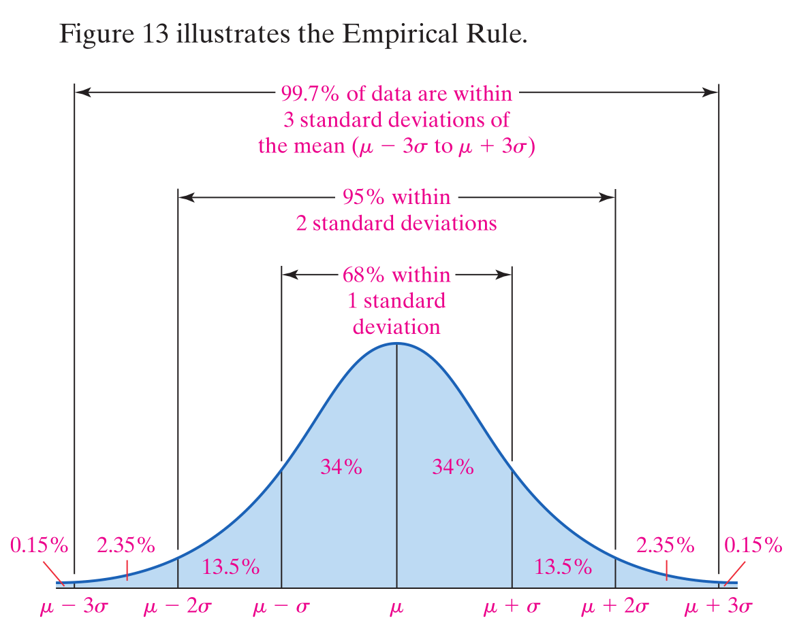
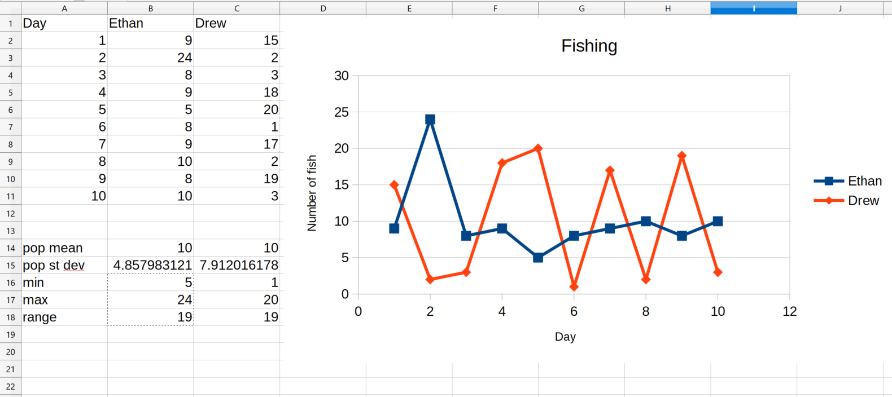
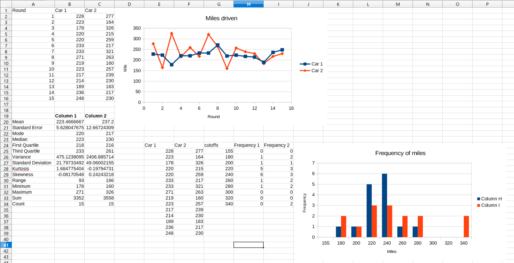
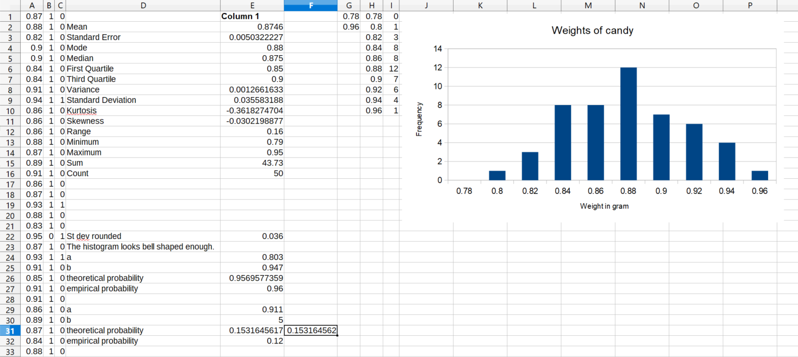
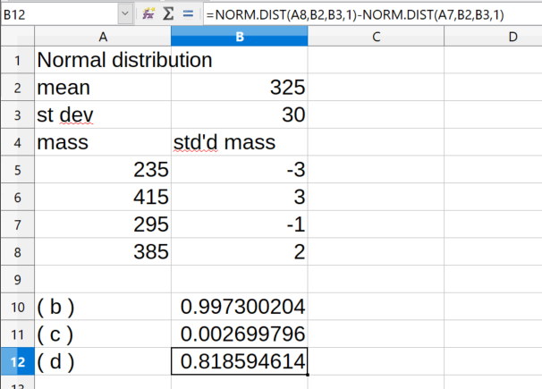

In this set of notes we work through some notions and examples from statistics. You can read the questions here, study the written or handwritten notes, and while doing so, listen to some explanations by clicking on the "play" button.
Lesson 11, Measures of Dispersion.
If a set of values are almost equal, then they are almost equal to the mean of the values. We can try to measure how far the values deviate from a preferred point. The simplest measure of this deviation or dispersion is the range of the set of values \(x_1,x_2,\ldots,x_n\), which is the width of the smallest inverval containing the data, i.e., the range is the maximum minus the minimum.
The population variance is \(\sigma^2=\frac1n((x_1-\mu)^2+(x_2-\mu)^2+\ldots+ (x_n-\mu)^2)\), where \(\mu\) is the population mean \(\mu=\frac1n(x_1+x_2+\ldots+x_n)\). The population standard deviation \(\sigma\) is the positive square root of the population variance \(\sigma^2\), i.e., \(\sigma=\sqrt{\frac1n((x_1-\mu)^2+(x_2-\mu)^2+\ldots+(x_n-\mu)^2)}\). We can say that \(\sigma\) is the root mean square of the individual differences \(x_1-\mu, x_2-\mu,\ldots,x_n-\mu\).
It is also possible to define a variance and a standard deviation for many infinite populations.
The Bessel corrections for small samples from a population for the sample standard deviation \(s\) and for the sample variance \(s^2\) are \(s^2=\frac1{n-1}((x_1-\bar x)^2+(x_2-\bar x)^2+\ldots+(x_n-\bar x)^2)\) and \(s=\sqrt{\frac1{n-1}((x_1-\bar x)^2+(x_2-\bar x)^2+\ldots+(x_n-\bar x)^2)}\), where \(\bar x=\frac1n(x_1+x_2+\ldots+x_n)\) is the sample mean.
The Bessel correction is most useful when the sample size is very small; also with the Bessel correction the sample variance is an "unbiased estimator" of the population variance. But when \(n\ge30\), there is little difference between \(\frac{1}{n-1}-\frac{1}{n}=\frac1{n(n-1)}\le\frac1{30\times29}\approx0.00114943\).
In a spreadsheet, we can compute the sample variance with the command
=var(), the sample standard deviation with =stdev(), the population variance with
=varp(), and the population standard deviation with =stdevp().
We mostly use the sample variance and the sample standard deviation.
There are two patron saints of statisticians: St. Dev and St. Err. We have just met St. Dev, and we are going to meet its friend St. Err later.
Normally, we measure the dispersion of a set of points from the mean in units of the standard deviation. Most points are within a very few, say, 1, 2, 3 standard deviations from the mean.
For the normal distribution with its bell shaped curve for the density (a kind of histogram), given by \(f(x)=\frac{1}{\sigma\sqrt{2\pi}}\exp(-\frac12(\frac{x-\mu}{\sigma})^2)\), we have the population mean equal to \(\mu\) and the population standard deviation equal to \(\sigma\), and 68% of values are within 1 standard deviation of the mean, 95% within 2 standard deviations of the mean, and 99.7% within 3 standard deviations of the mean.
In practice, when we have a bell shaped sample, we can use the above fact, called the Empirical Rule, with the sample mean \(\bar x\) and the sample standard deviation \(s\) in place of the population mean \(\mu\) and the population standard deviation \(\sigma\).

Question. A Fish Story. Ethan and Drew went on a 10-day fishing trip. The number of smallmouth bass caught and released by the two boys each day was as follows:
Ethan 9 24 8 9 5 8 9 10 8 10
Drew 15 2 3 18 20 1 17 2 19 3
(a) Find the population mean and the range for the number of smallmouth bass caught per day by each fisherman. Do these values indicate any differences between the two fishermen’s catches per day? Explain.
(b) Draw a dot plot for Ethan. Draw a dot plot for Drew. Which fisherman seems more consistent?
(c) Find the population standard deviation for the number of smallmouth bass caught per day by each fisherman. Do these values present a different story about the two fishermen’s catches per day? Which fisherman has the more consistent record? Explain.
(d) Discuss limitations of the range as a measure of dispersion.

See the attached spreadsheet.
We can compute the population mean using the command =average(),
the population standard deviation with =stdevp(),
the minimum with =min(),
the maximum with =max(),
and the range as the difference max minus min.
The scatter plot shows that the red line is much wigglier than the
blue line, and this shows up in the higher standard deviation for Drew
(red line) than for Ethan (blue line).
The smaller the standard deviation the closer we are to the constant given
by the mean. So Ethan has a more consistent record.
The two sets of numbers have the same mean and the same range, yet
one is much wigglier than the other.
Question. Which Car Would You Buy? Suppose that you are in the market to purchase a car. You have narrowed it down to two choices and will let gas mileage be the deciding factor. You decide to conduct a little experiment in which you put 10 gallons of gas in the car and drive it on a closed track until it runs out gas. You conduct this experiment 15 times on each car and record the number of miles driven.
Car 1: 228 223 178 220 220 233 233 271 219 223 217 214 189 236 248
Car 2: 277 164 326 215 259 217 321 263 160 257 239 230 183 217 230
Describe each data set. That is, determine the shape, center, and spread. Which car would you buy and why?

See the attached spreadsheet. We can compute the mean, median, standard deviation, min, max, range, plot the two curves, bin the data and count the frequencies, and plot a histogram for both cars. There seems to be no marked difference between the two cars. Car 1 has data more packed in towards the mean, while Car 2 has some measurements of much higher mileage. The medians are not much different. Car 2 has two 300 milers, which kind of skew the data. If we drop the lowest two and the highest two numbers, then we get a much more consistent performance for Car 1 than for Car 2. It seems that Car 1 may have a more reliable gas mileage than Car 2.
Question. The Empirical Rule. The following data represent the weights (in grams) of a random sample of 50 M&M plain candies.
0.87 0.88 0.82 0.90 0.90 0.84 0.84 0.91 0.94 0.86 0.86 0.86 0.88 0.87 0.89 0.91 0.86 0.87 0.93 0.88 0.83 0.95 0.87 0.93 0.91 0.85 0.91 0.91 0.86 0.89 0.87 0.84 0.88 0.88 0.89 0.79 0.82 0.83 0.90 0.88 0.84 0.93 0.81 0.90 0.88 0.92 0.85 0.84 0.84 0.86
Source: Michael Sullivan
(a) Determine the sample standard deviation weight. Express your answer rounded to three decimal places.
(b) On the basis of the histogram drawn in Section 3.1, Problem 25, comment on the appropriateness of using the Empirical Rule to make any general statements about the weights of M&Ms.
(c) Use the Empirical Rule to determine the percentage of M&Ms with weights between 0.803 and 0.947 gram. Hint: \(\bar x = 0.875\).
(d) Determine the actual percentage of M&Ms that weigh between 0.803 and 0.947 gram, inclusive.
(e) Use the Empirical Rule to determine the percentage of M&Ms with weights more than 0.911 gram.
(f) Determine the actual percentage of M&Ms that weigh more than 0.911 gram.

See the attached spreadsheet.
We saw the same data about candies before. Here is some work in a spreadsheet.
I have just copied the previous spreadsheet. Inserted a column B with a
boolean (0 or 1) column that tells us whether a measurement is between the two
cutoffs a=0.803, b=0.947. Then we computed the empirical probability as the
mean or average of column B. The theoretical probability is an integral, or a
difference \(\Phi(b)-\Phi(a)\), where \(\Phi\) is the cumulative
distribution function, which we can compute in the spreadsheet as
=NORM.DIST(,,,), so we can compute the theoretical probability in the
spreadsheet as =NORM.DIST(D25,D2,D9,1)-NORM.DIST(D24,D2,D9,1), where we need
to pass in the number or x-value, the mean, the standard deviation, and 1 for
the cumulative distribution. The difference equals the area under the normal
curve over the interval \([a,b]\). In the first case, both the theoretical
and empirical probabilities are about 95%.
In the second case, we can compute the theoretical probability as the
complementary probability \(1-\Phi(a)=1-\textrm{Prob}[X\le 0.911]\), which
is given in the spreadsheet by =1-NORM.DIST(E29,E2,E9,1). We could also
compute it using the previous formula \(\Phi(b)-\Phi(a)\), where we just
pass in a large (unlikely) value for the upper limit \(b\). In the second
case, the theoretical probability is about 15% while the empirical probability
is about 12%.
Question. The Empirical Rule. The weight, in grams, of the pair of kidneys in adult males between the ages of 40 and 49 has a bell-shaped distribution with a mean of 325 grams and a standard deviation of 30 grams.
(a) About 95% of kidney pairs will be between what weights?
(b) What percentage of kidney pairs weighs between 235 grams and 415 grams?
(c) What percentage of kidney pairs weighs less than 235 grams or more than 415 grams?
(d) What percentage of kidney pairs weighs between 295 grams and 385 grams?

See the attached spreadsheet. We can compute the standardization or z-score of the given numbers relative to the given mean and standard deviation, it is given by the linear function \(z=\frac{x-\mu}{\sigma}\), which we have seen in the exponent in the normal density function we called \(f(x)\) above.
(a) We can expect 95% of the kidneys between -2 and 2 stdevs of the mean, i.e., between 325-2(30)=265 and 325+2(30)=385. (There are many segments that have an area above them equal to 95%, but the previously given one is the only one that is symmetric about the mean.)
(b) The range 235 to 415 corresponds to -3 and 3 sigma, i.e, the probability is about 99.7% according to the bell curve figure above that you have no doubt already mugged up.
(c) This is the complementary probability to (b), i.e., 1-0.997=0.003=0.3%.
(d) We have 295 corresponding to -1 sigma and 385 to 2 sigma; if we eyeball the above figure of the bell curve (the one you have mugged up), then we get the area above [-1,0] sigma to be 34%, and the area above [0,2] to be (34+13.5)%, i.e., 34+34+13.5=81.5 percent.
We also worked out the areas in the spreadsheet using the command
NORM.DIST().
Here is a famous inequality about the tail probability of a random number with mean and variance.
Theorem. (Chebyshev’s inequality) If \(X\) is a random variable with mean \(\mu\) and variance \(\sigma^2\), then for any number \(k>1\) we have for the tail probability \(P[|X-\mu|\ge k\sigma]\le\frac1{k^2}\), and for the complementary probability \(P[|X-\mu|<k\sigma]\ge1-\frac{1}{k^2}\).
Proof. Indeed, the event \(|X-\mu|\ge k\sigma\) can be written as \(\frac1{k^2}\big(\frac{X-\mu}{\sigma}\big)^2\ge1\), so \(P[|X-\mu|\ge k\sigma]=P[\frac1{k^2}\big(\frac{X-\mu}{\sigma}\big)^2\ge1]= \int 1_{\frac1{k^2}\big(\frac{X-\mu}{\sigma}\big)^2\ge1}\,dP\le \int\frac1{k^2}\big(\frac{X-\mu}{\sigma}\big)^2\,dP= \frac1{k^2\sigma^2}\int(X-\mu)^2\,dP=\frac1{k^2\sigma^2}\sigma^2=\frac1{k^2}\). Subtracting this inequality from 1, we get \(P[|X-\mu|<k\sigma]\le(1-\frac1{k^2})\) as claimed. QED.
In practical terms, Chebyshev’s inequality can be worded as follows. For any data set or distribution, at least \(\big(1-\frac1{k^2}\big)\cdot100\%\) of the observations lie within \(k\) standard deviations of the mean, where \(k\) is any number greater than 1. That is, at least \(\big(1-\frac1{k^2}\big)\cdot100\%\) of the data lie between \(\mu - k\sigma\) and \(\mu + k\sigma\) for \(k>1\). Note: We can also use Chebyshev’s inequality based on sample data. We can use Chebyshev’s inequality also with the bell shaped or normal distribution or data, but the empirical rule is much more accurate for that special case (which does not apply in general like Chebyshev’s inequality, only in the case of the normal distribution).
Question. Chebyshev’s Inequality. In December 2014, the average price of regular unleaded gasoline excluding taxes in the United States was $3.06 per gallon, according to the Energy Information Administration. Assume that the standard deviation price per gallon is $0.06 per gallon to answer the following.
(a) What minimum percentage of gasoline stations had prices within 3 standard deviations of the mean?
(b) What minimum percentage of gasoline stations had prices within 2.5 standard deviations of the mean? What are the gasoline prices that are within 2.5 standard deviations of the mean?
(c) What is the minimum percentage of gasoline stations that had prices between $2.94 and $3.18?
(a) Let \(k=3\), so \(1-\frac{1}{k^2}=1-1/9=8/9\approx88.9\%\) of the prices are within 3 stdevs of the mean.
(b) Let \(k=2.5\), so \(1-\frac{1}{k^2}=1-1/(5/2)^2=1-4/25=21/25=82\%\) of the prices are within 2.5 stdevs of the mean. We can compute \(3.06-2.5(0.06)=2.91\) and \(3.06+2.5(0.06)=3.21\). The prices between $2.91 and $3.21 are within 2.5 stdev of the mean.
(c) We can compute the z-score or standardization, \(z=(x-\mu)/\sigma\), for \(x=2.94\), we get \(z=(2.94-3.06)/0.06=-2\), and for for \(x=3.18\), we get \(z=(3.18-3.06)/0.06=2\). Let \(k=2\), so \(1-\frac{1}{k^2}=1-1/2^2=3/4=75\%\) of the prices are within 2 stdevs of the mean, i.e., between $2.94 and $3.18.